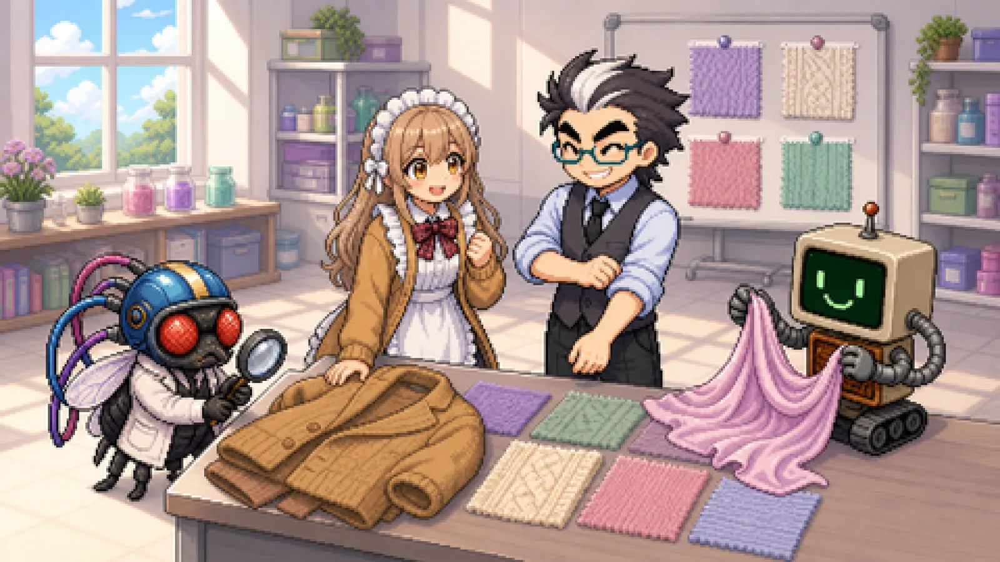
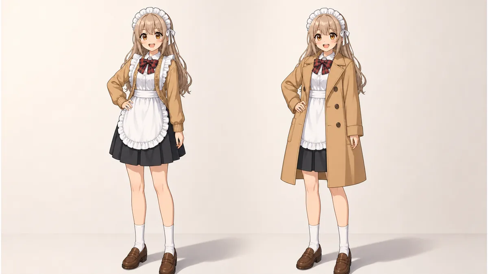
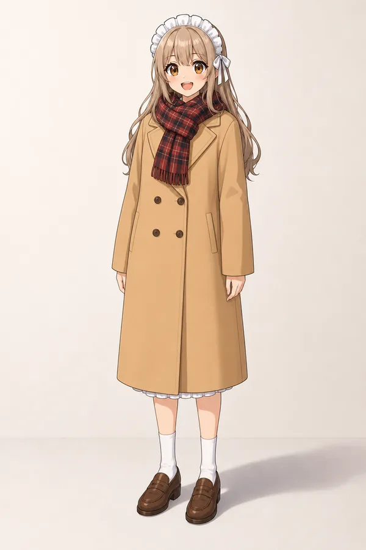
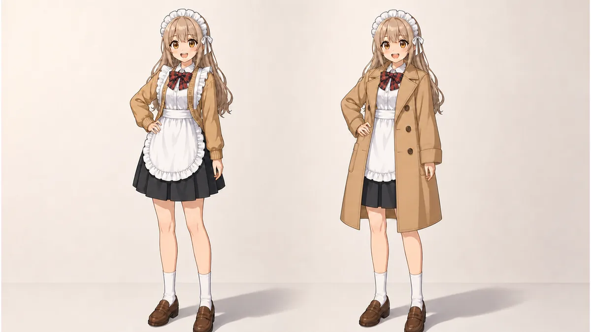
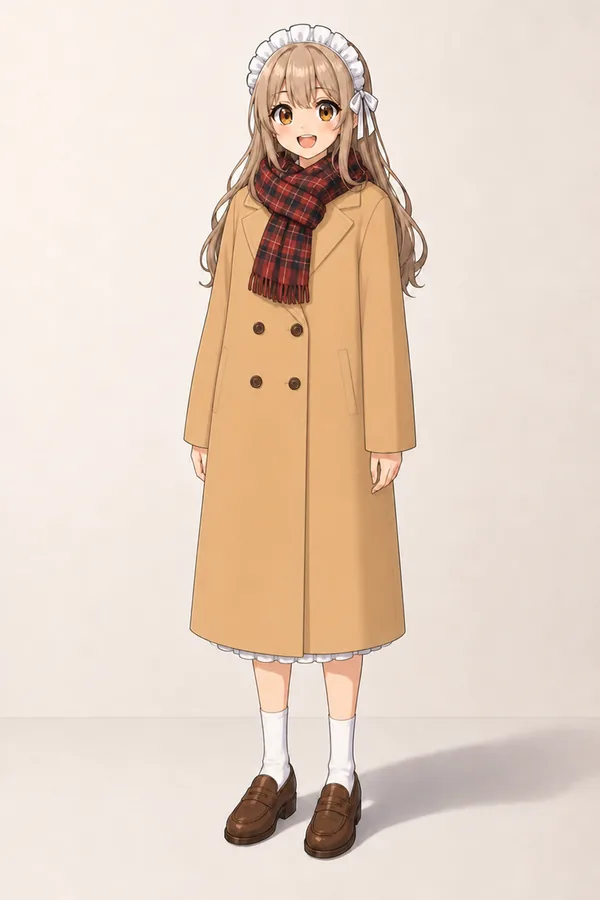

오늘의 과제

박사니트 카디건과 울 코트. 팔을 똑같이 굽히면 주름 수가 같을까?

주판봇같은 팔이니까 같겠죠! 주름 다섯 개씩!

초파리 연구원코트는 두꺼워서 접히기 어려운데? 두께부터 바꿔 보자.

모아코트 팔꿈치에 작년 겨울 주름이 아직 남아 있어요…

모아가 니트 카디건과 두꺼운 울 코트를 번갈아 입고, 박사가 셔츠와 조끼 차림으로 손님 모델을 섭니다. 같은 팔 굽히기인데 주름이 왜 다를까요?
그림 실력·코드·수식을 몰라도 됩니다. 실험을 눌러 보며 따라오세요.
같은 힘으로 밀어도 얇은 천은 잔주름 여러 개, 두꺼운 천은 굵은 주름 몇 개가 생깁니다

학교 수학으로 보면 — 거듭제곱과 거듭제곱근 — a의 3/4제곱은 a를 세제곱한 뒤 네제곱근을 씌운 값입니다.
| 식 조각 | 뜻 |
|---|---|
| 두께 | 천의 두께 |
| 휘기 어려움 | 굽히는 데 드는 힘의 크기(굽힘 강성) |
| ∝ | 비례한다는 뜻. 정확한 값은 천마다 다름 |

얇은 비닐봉지는 구기면 잔주름투성이, 두꺼운 가죽 가방은 큰 굽이 몇 개만 생깁니다.
재료 역학에서는 얇은 판의 주름 간격을 이런 식으로 계산합니다. 3D 의상 프로그램의 '두께'와 '굽힘 강성' 값을 올리면 주름이 굵고 적어지는 것도 같은 원리입니다.

두께 2배면 간격 약 1.68배, 3배면 약 2.28배입니다. 폭 30cm 기준 주름은 10개 → 6개 → 4개로 줄어듭니다.
그래서 코트는 굵은 주름 몇 개, 니트·티셔츠는 잔주름 여러 개로 그립니다.
작업에서는 의상 설정표에 '얇음·보통·두꺼움'을 적고 주름 개수를 그에 맞춥니다.

AI 그림의 두꺼운 울 코트에 잔주름이 촘촘합니다. 고칠 곳일까요?
두꺼운 천은 주름이 굵고 적어야 합니다. 'thick heavy wool coat with a few broad soft folds'처럼 두께와 주름 굵기를 함께 적어 다시 요청합니다.
잘 늘어나지 않는 빳빳한 천은 주름이 날카롭게 꺾이고, 그림자도 마름모·삼각형으로 생깁니다
다림질한 셔츠의 팔꿈치를 보면 주름이 각지게 접히고, 그늘도 뾰족한 조각으로 생깁니다.
셀 채색에서 빳빳한 소재(셔츠·제복·정장)는 그림자를 각진 조각으로, 부드러운 소재(니트·저지)는 둥근 덩어리로 넣는 것이 관례입니다. 정장은 주름을 곧게 그어 빳빳한 인상을 줍니다.
꺾임이 약하면 밝기가 천천히 바뀌어 그림자 경계가 둥글고, 꺾임이 강하면 면이 확 바뀌어 경계가 직선이 됩니다.
두 방향의 주름이 겹치는 곳에서 직선 경계가 만나 마름모·삼각형 그림자가 생깁니다.
작업에서는 셔츠·정장은 각진 그림자, 니트·티셔츠는 둥근 그림자로 소재를 구별합니다.
셔츠를 입은 캐릭터인데 AI 그림의 그림자가 모두 둥글게 번져 있습니다. 괜찮을까요?
빳빳한 소재는 각진 그림자가 어울립니다. 'crisp cotton shirt with sharp angular folds and diamond-shaped shadows'처럼 그림자 모양까지 적어 줍니다.
빳빳한 천은 같은 곳을 반복해 굽히면 힘을 빼도 자국이 남습니다
학교 수학으로 보면 — 거듭제곱 — 같은 수를 여러 번 곱합니다. 0.9를 계속 곱하면 점점 작아집니다.
| 식 조각 | 뜻 |
|---|---|
| p | 한 번 굽힐 때 자국이 남는 비율(소재마다 다름) |
| n | 같은 곳을 굽힌 횟수 |
| 남은 자국 | 0이면 매끈, 1이면 진한 자국 |
자주 입는 청바지 무릎 뒤에 가로 자국이 남고, 새 청바지에는 없는 것과 같습니다.
빳빳한 옷은 접점이 있어도 주름이 덜 생기지만, 팔꿈치·무릎처럼 자주 굽히는 곳에는 버릇 주름을 살짝 넣습니다. 그림자를 물결 모양으로 넣어 '조금 남은 자국'을 표현하고, 주름이 없는 매끈한 면에는 섬 그림자도 넣지 않습니다.

코트(p = 0.1)는 5번에 0.41, 10번에 0.65로 빠르게 자국이 쌓입니다. 니트(p = 0.02)는 10번에도 0.18입니다.
자국은 팔꿈치 안쪽에 물결 모양 그림자로 살짝 넣고, 주름이 없는 몸통 앞판은 그림자 없이 비워 둡니다.
작업에서는 '새 옷'인지 '입던 옷'인지를 설정에 적어 버릇 주름의 진하기를 정합니다.

새로 산 코트라고 설정했는데 AI 그림의 코트가 구김투성이입니다. 문제일까요?
새 옷이면 버릇 주름이 거의 없어야 합니다. 'brand-new crisp coat, smooth panels, only slight creases at the elbows'처럼 상태를 적어 줍니다.
부드러운 안쪽 옷과 빳빳한 겉옷을 겹쳐 입으면, 접점이 많고 부드러운 쪽에 주름이 몰립니다
학교 수학으로 보면 — 곱셈으로 두 조건을 함께 보기 — 접점이 많고 부드러울수록 커집니다.
| 식 조각 | 뜻 |
|---|---|
| 접점 개수 | 그 옷이 몸에 걸리거나 굽혀지는 곳의 수 |
| 부드러움 계수 | 부드러울수록 큼(예시: 니트 1.5, 셔츠 1, 재킷 0.5) |
| 예상 주름 수 | 많고 적음을 비교하는 예시 점수 |
정장 재킷은 매끈한데 안에 입은 셔츠 소맷부리는 구겨져 있는 모습을 흔히 봅니다.
박사처럼 셔츠 위에 조끼를 입으면, 조끼는 소매가 없어 접점이 적고 주름이 거의 없습니다. 주름은 셔츠 소매에 모이고, 소매를 걷으면 걷어 올린 곳에 겹친 주름 무늬가 생깁니다.
겉옷이 빳빳하고 소매가 있으면(재킷) 주름이 겉옷에도 조금 생기지만, 소매가 없으면(조끼) 주름은 안쪽 옷 소매에 몰립니다.
겉옷이 부드러우면(카디건) 겉옷에도 주름이 많이 생기고 안쪽 옷은 가려집니다.
작업에서는 의상 설정표에 부위별 소재를 적고, 주름은 '보이는 옷 중 부드럽고 접점 많은 곳'에 집중합니다.
조끼를 입은 캐릭터의 AI 그림에서 조끼 앞판에 주름이 셔츠보다 많습니다. 맞을까요?
조끼는 소매가 없어 접점이 적고 보통 빳빳합니다. 앞판 주름이 많으면 소재가 바뀐 그림입니다. 'structured vest with smooth front panels, soft cotton shirt sleeves with folds'처럼 부위를 나눠 적습니다.
이 부에서 배운 원리를 그림 생성 AI(Genspark 등)로 직접 확인합니다. A는 이 페이지 그림을 실제로 만든 프롬프트, B는 원리를 하나 빼거나 바꾼 비교용 문장입니다.
참고 그림 내려받기: haru_anime_base · sia_anime_base · moa_anime_base · haru_sheet · sia_sheet · moa_sheet · doctor_sheet · fruitfly_sprites_6 · jupanbot_ref_genspark_v0 · pixel_style_ref_prev_cover
같은 팔 굽히기에서 두께가 주름 간격과 굵기를 바꾸는지 봅니다.
첨부: refs/moa_anime_base.png, refs/doctor_sheet.png
Illustration, wide 16:9. Art style: high-quality anime illustration, clean confident lineart, two-tone cel shading with a darker second shadow only in the deepest folds, natural adult proportions. Match the attached reference images exactly (face, hair, colors, accessories). All characters are adults in their early twenties (the Professor is an adult man); modest outfits exactly as described. Two figures side by side, same pose with the left elbow bent: LEFT Moa (adult maid intern, long ash-beige wavy hair, white frilled maid headband with a white ribbon over her LEFT ear, amber eyes), wearing camel knit cardigan over a white blouse, red and navy plaid bow tie, white frilled apron, black skirt — the knit cardigan shows many small rounded folds at the elbow; RIGHT the same Moa wearing a thick heavy camel wool double-breasted coat over her outfit — only two or three broad folds at the elbow, smooth structured front panels. Light from the upper left. Plain off-white studio background or a bright clean lab interior. No text, no letters, no numbers, no logos, no watermark, no revealing clothing, not childlike, no school uniform, not resembling any famous anime character.
Same image. Change only: draw the wool coat with the same many small folds as the knit cardigan. Still no text.

실제 결과: B에서도 코트는 크게 바뀌지 않았습니다. 도구가 '울 코트는 굵은 주름'이라는 상식을 고집한 셈입니다. 차이가 약할 때는 6부 f2처럼 소재 낱말 자체를 바꿔 보세요.
셔츠 소매의 그림자가 둥근 덩어리가 아니라 각진 조각으로 나오는지 봅니다.
첨부: refs/moa_anime_base.png, refs/doctor_sheet.png
Illustration, vertical 2:3. Art style: high-quality anime illustration, clean confident lineart, two-tone cel shading with a darker second shadow only in the deepest folds, natural adult proportions. Match the attached reference images exactly (face, hair, colors, accessories). All characters are adults in their early twenties (the Professor is an adult man); modest outfits exactly as described. Upper body of the Professor (adult male scientist, dark charcoal spiky hair with a white streak at the front, very thick black eyebrows, teal rectangular glasses), wearing light blue crisp cotton dress shirt with sleeves rolled up to the elbows, a gray sleeveless vest and a black tie (no lab coat), one hand at the back of his neck. The crisp shirt has sharp angular folds with diamond- and triangle-shaped shadows at the elbow and under the arm; the vest front stays smooth with almost no folds. Adult man in his thirties, normal proportions (not chibi). Light from the upper left. Plain off-white studio background or a bright clean lab interior. No text, no letters, no numbers, no logos, no watermark, no revealing clothing, not childlike, no school uniform, not resembling any famous anime character.
Same image. Change only: make every shadow on the shirt soft and rounded like on a knit sweater. Still no text.
실제 결과: B는 A와 거의 같았습니다. 그림자 모양만 바꾸라는 요청은 도구가 잘 따르지 않습니다. 각진 그림자와 둥근 그림자의 차이는 3부 2단계 실험에서 확인하세요.
팔을 펴도 팔꿈치 안쪽에만 옅은 자국이 남는지 봅니다.
첨부: refs/moa_anime_base.png, refs/doctor_sheet.png
Illustration, vertical 2:3. Art style: high-quality anime illustration, clean confident lineart, two-tone cel shading with a darker second shadow only in the deepest folds, natural adult proportions. Match the attached reference images exactly (face, hair, colors, accessories). All characters are adults in their early twenties (the Professor is an adult man); modest outfits exactly as described. Full body of Moa (adult maid intern, long ash-beige wavy hair, white frilled maid headband with a white ribbon over her LEFT ear, amber eyes), wearing thick camel wool double-breasted coat over her outfit, a plaid scarf, standing straight with arms relaxed at her sides. The coat is mostly smooth; only the inner elbows keep faint memory creases with small wavy shadows. No island shadows on the smooth front panels. Light from the front, soft. Plain off-white studio background or a bright clean lab interior. No text, no letters, no numbers, no logos, no watermark, no revealing clothing, not childlike, no school uniform, not resembling any famous anime character.
Same image. Change only: it is a brand-new coat — no memory creases anywhere. Still no text.

실제 결과: 새 코트(B)는 팔꿈치 자국까지 사라져 매끈합니다. A와 나란히 보면 '입던 옷'이 구별됩니다.

| 항목 | 주판봇 | 초파리 |
|---|---|---|
| 닮음(외형 고정값) | 8 | 8 |
| 소재감(두께·꺾임) | 3 | 9 |
| 자연스러움(주름 위치) | 5 | 8 |
| 합계 | 16 | 25 |


점수는 이야기 속 예시입니다. 실제 그림을 평가한 값이 아닙니다.
| 주제 | 한 줄 | 작업에서는 |
|---|---|---|
| 두께와 간격 | 간격 ∝ 두께^(3/4) | 두꺼우면 굵고 적게 |
| 꺾임 | 빳빳하면 마름모 그림자 | 셔츠는 각지게, 니트는 둥글게 |
| 버릇 주름 | 남은 자국 = 1 − (1 − p)ⁿ | 입던 옷은 팔꿈치에 옅게 |
| 겹쳐 입기 | 접점 × 부드러움 | 주름은 부드럽고 접점 많은 쪽에 |

이 페이지에 나온 개념·방법·비유·쓰임을 모았습니다. 검색하고, "설명 보러 가기"로 본문에 돌아갑니다.
지식 색인을 출처와 함께 파일로 내려받습니다. 서지 관리는 BibTeX·RIS, 온톨로지 편집은 Turtle, 그래프 도구는 CSV, 여러 페이지 합치기는 kg.json입니다.